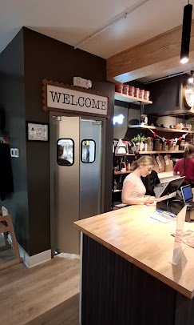
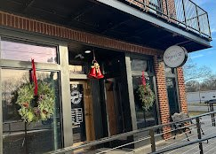
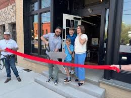

Why We Do This
Real Food. Real People.
Walk in and you'll notice the exposed brick walls, the framed historic photographs, the warm glow of a place that feels like it's been here forever. That's the beauty of Wagner Street Bistro — it's not trying to be something it's not. It's just a family, feeding their neighbors, one plate at a time.





